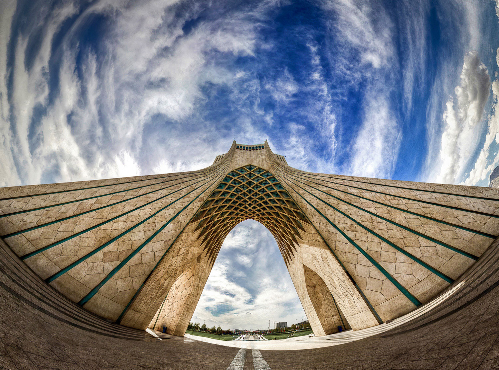

Tehran
Tehran is the capital of Iran. Tehran is the most populous city in Iran and Western Asia and has the second-largest metropolitan area in the Middle East. It is ranked 24th in the world by the population of its metropolitan area. Azadi Tower completed in 1971, is the symbol of Tehran and marks the west entrance to the city.

Tehran's 2019 population is now estimated at 9,013,663. Tehran has grown by 458,574 since 2015, which represents a 1.31% annual change. These population estimates and projections come from the latest revision of the UN World Urbanization Prospects.
| Year | Population | Growth Rate (%) |
|---|---|---|
| 1995 | 6,686,727 | 0.99% |
| 2000 | 7,128,140 | 1.29% |
| 2005 | 7,652,157 | 1.43% |
| 2010 | 8,058,520 | 1.04% |
| 2015 | 8,555,089 | 1.20% |
| 2020 | 9,134,708 | 1.34% |
| 2025 | 9,729,742 | 1.27% |